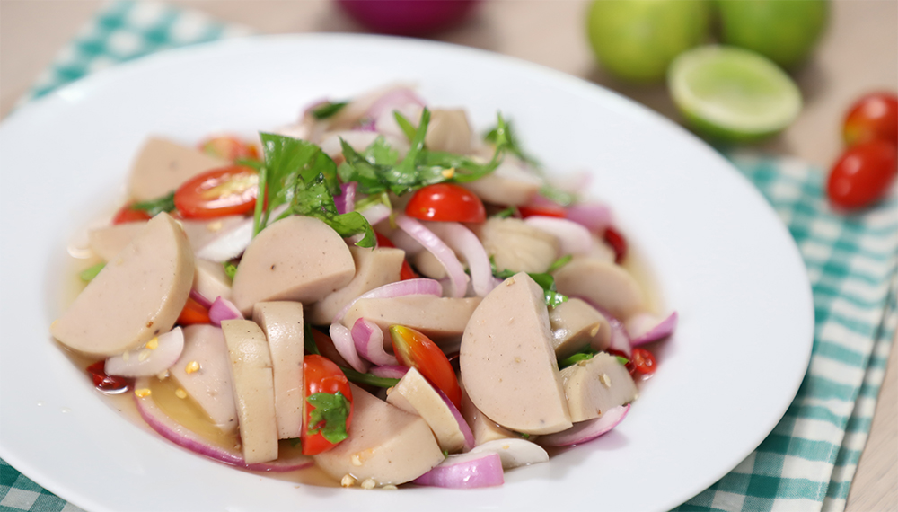

ยำแซ่บหมูยอ

ส่วนผสม
- หมูยอ1 แท่ง
- เห็ดออรินจิหั่น1 ถ้วยเล็ก
- ต้นหอมหั่นท่อน2 ต้น
- พริกชี้ฟ้าโขลกหยาบ8-10 เม็ด
- น้ำกระเทียมดอง1 ช้อนโต๊ะ
- น้ำตาลปิ๊บ1/2 ช้อนโต๊ะ
- น้ำมะนาว3 ช้อนโต๊ะ
- น้ำปลา2 ช้อนโต๊ะ
- ผงชูรสตามชอบ
วิธีทำ
เวลาเตรียมส่วนผสม: 10 นาที
เวลาปรุงอาหาร: 5 นาที
- นำเห็ดออรินจิที่หั่นไปลวกในน้ำเดือด ตักขึ้นสะเด็ดน้ำแยกพักไว้
- นำหมูยอมาหั่นชิ้นตามชอบ ของเราหั่นเป็นแผ่นๆ พื้นที่ได้สัมผัสกับน้ำยำทุกด้าน เพิ่มความอร่อย นำไปลวกผ่านน้ำเดือด 1 นาที ตักขึ้นสะเด็ดน้ำแยกพักไว้
- เริ่มปรุงน้ำยำ นำพริกที่โขลกไว้ลงชามผสม ตามด้วยน้ำตาลปิ๊บและน้ำปลา คนให้น้ำตาลละลายจนหมด ตามด้วยน้ำมะนาวและน้ำกระเทียมดอง ผงชูรส
(อันนี้ตามชอบของเราเลย จะไม่ใส่ก็ได้)
- ชิมรสชาติ เผ็ด เปรี้ยว หวาน เค็ม แล้วแต่ชอบ จากนั้นใส่ต้นหอมหั่นท่อนลงไปเคล้าอย่างเบามือ
- จัดใส่จานพร้อมเสิร์ฟ อร่อยแซ่บมาก
ขอบคุณข้อมูลสูตรอาหารนี้จาก
กลับไปหน้าแรก